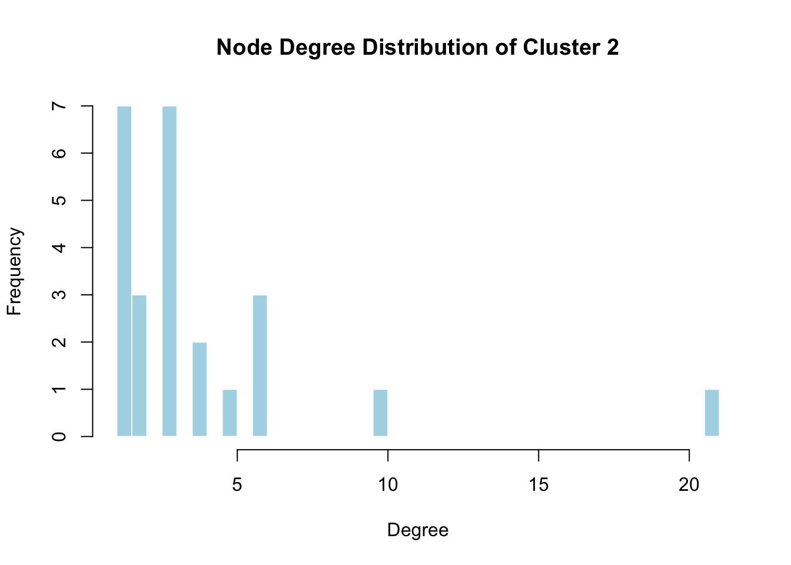

Week 2: Network topology, statistics, and clustering
Network topology
Clustering
Advanced Visualization
Published
September 11, 2025
Today we will get a bit more advanced with our use of igraph!
In this exercise we will use a subset of the human interaction dataset by Rual et al. (Nature.2005 Oct 20;437(7062):1173-8). The data consists of an interaction data frame (without edge annotations) and a node annotation data frame with gene names.
The following objects are masked from 'package:stats':
decompose, spectrum
The following object is masked from 'package:base':
union
Loading required package: ggplot2
Attaching package: 'tidygraph'
The following object is masked from 'package:igraph':
groups
The following object is masked from 'package:stats':
filter
load("./data/exercise2.Rdata")
This network consists of 1089 interactions observed between 419 human proteins, and is a small subset of a larger human interaction dataset. This subset consists of proteins that interact with the transcription factor TP53 (also known as P53).
Take a moment to read about the function of TP53 by looking it up in UniProt:
In short, the human TP53 gene encodes cellular tumor antigen p53, a crucial transcription factor that acts as a central tumor suppressor and guardian of genomic integrity. In response to various cellular stresses such as DNA damage, oncogene activation, hypoxia, or oxidative stress, p53 becomes stabilized and activated through post-translational modifications that prevent its normal rapid degradation. Once active, it binds specific DNA response elements to regulate a large network of target genes involved in cell cycle arrest (e.g. via p21/CDKN1A), DNA repair (e.g. GADD45), senescence, and apoptosis (e.g. BAX, PUMA, NOXA). This coordinated response allows cells either to pause and repair their DNA or, if damage is irreparable, to undergo programmed cell death, thus preventing the propagation of potentially oncogenic mutations. Because of this role, p53 is often called the “guardian of the genome.” Inactivation or mutation of TP53—commonly seen in over half of human cancers—disrupts these protective pathways, enabling unchecked cell proliferation and genomic instability, which significantly contributes to tumorigenesis.
Part II. Network layout and Selecting nodes
TASK: Explore network layouts
So, now here I show two different layouts for the same network. The first is fr (Fruchterman–Reingold layout), and the second is kk (Kamada–Kawai layout) – ggraph(n, layout = “fr”) and ggraph(n, layout = “kk”). Both are quit messy – hairballs. Really difficult to see anything meaningful without analysis. But either way, with kk we can sort of see some hubs in the center, but it does look a bit more messy, while with fr, the plot looks more spaced out, with slightly more comprehensible peripheral nodes. In this case, I prefer fr.
Here is a little information from ChatGPT about both layouts:
Name: Kamada–Kawai algorithm (kk)
How it works:
Treats the graph like a spring system.
Each pair of nodes has an “ideal” distance based on their graph-theoretic shortest path distance.
The algorithm minimizes the difference between ideal and actual distances.
Effect:
Produces fairly symmetrical and uniformly spaced graphs.
Works especially well for smaller networks (tens–hundreds of nodes).
Name: Fruchterman–Reingold algorithm (fr)
How it works:
Also uses a force-directed model:
connected nodes attract each other
all nodes repel each other like charged particles
The system iteratively simulates forces until it reaches equilibrium.
Effect:
Tends to produce clustered, organic “clouds”.
Works well for larger networks (hundreds–thousands of nodes).
Now I will try to use the igraph function neighbors() to get a list of first-order interaction partners of TP53
# neighbors() in igraph looks up vertices by the special attribute name. We have Gene_ID, not name. So here we assign all Gene_Ids to the atrribute name instead.V(n)$name <-V(n)$Gene_Idtp <-V(n)[name =="TP53"] #V (n) gives us the set of nodes of n, name == "TP53" is a filter on a vertex attribute called name. V(n)[ … ] subsets the vertices using that filter. Result: tp is a vertex sequence (an igraph object, just a selection of vertices that stays tied to a specific graph) containing the single vertex whose name is "TP53".tp # just to check
+ 1/419 vertex, named, from c4af449:
[1] TP53
tp_neighbors <-neighbors(n, tp, mode ="all") # vertex sequence of neighbors# What it does:# neighbors() returns a vertex sequence of nodes directly connected to TP53.# mode = "all" is fine for undirected graphs (or use "in"/"out" for directed).length(tp_neighbors) # number of first-order connections
[1] 65
stopifnot(length(tp_neighbors) ==degree(n, v = tp, mode ="all")) # This is a line that ChatGPT wrote when I was asking for help. It is useful to think about it a litle. It simply stops R and tells it to throw an error if the length of tp_neighbors that we got, which is the number of first-order connecitons, does not equal the degree of the node tp (degree being the number of incident edges of tp, being the same as the number of neighbors in simple undirected graphs with no self-loops, etc), which is outputted by degree(n, v = tp, mode = "all").# TRUE only for TP53V(n)$is_tp53 <-V(n)$name =="TP53"# "no" for everyone, then "yes" for neighbors of TP53V(n)$interacts_tp53 <-rep("no", vcount(n))#V(n)$interacts_tp53 <- …#V(n) = the vertex sequence (all nodes) of graph n.#$interacts_tp53 creates/overwrites a vertex attribute called interacts_tp53.#A vertex attribute is just a vector with one value per node (length must equal vcount(n)), stored on the graph.#rep("no", vcount(n)) -- vcount(n) returns the number of vertices (nodes) in graph n (419 in this case). rep("no", 419) builds a character vector c("no","no",…,"no") of length 419.#So we are explicitly creating a value for every node: everyone starts as "no" (i.e., “does not interact with TP53”).#This is clearer/safer than assigning a single "no" and relying on R’s recycling; it guarantees exact length matching to vcount(n).#After this line, every node has interacts_tp53 == "no".#Then you flip the subset of TP53’s neighbors to "yes":V(n)[tp_neighbors]$interacts_tp53<-"yes"# quick checksum(V(n)$is_tp53) # expect 1
[1] 1
table(V(n)$interacts_tp53) # "yes" count should match length(tp_neighbors)
no yes
355 64
all(V(n)[tp_neighbors]$interacts_tp53 =="yes") # should be TRUE
[1] TRUE
So we have 65 first-order interactions with TP53 in this network.
Now, I will create a subnetwork consisting only of TP53 and its interaction partners, and label it with the corresponding gene names.
One way to do this is to use the delete_vertices() function to make a new graph, keeping only the nodes interacting with TP53. Another way to do it is by using induced_subgraph() and only keeping the nodes that are neighbours to TP53.
keep_vs <-c(tp, tp_neighbors) # Concatenates all the neighbors and tp into a single vertex sequence. These are the ones we are keeping.tp53_ego <-induced_subgraph(n, vids = keep_vs) #the induced_subgraph function takes n, and builds a new graph with only the vertices I decide to keep. These are denoted by the argument vids (stands for vertex identifiers). the object is called ego, because an ego-network (or ego-centric network) is the local subgraph centered on a focal actor (the ego) and their direct connections (alters).ggraph(tp53_ego, layout ="fr") +geom_edge_link(alpha =0.3) +geom_node_point(aes(color =ifelse(name =="TP53", "TP53", "Partner")), size =3) +scale_color_manual(values =c(TP53 ="tomato", Partner ="steelblue")) +geom_node_text(aes(label = name), repel =TRUE, size =3) # label by 'name' (gene symbol) +
keep_vs <-c(tp, tp_neighbors) # so this is the same across bothdrop_vs <-V(n)[!(V(n) %in% keep_vs)] # but now there is this line, which makes it less straightforward compared to induced_subgraph(). this is basically everything in n, but not in keep_vs. tp53_ego2 <-delete_vertices(n, drop_vs)ggraph(tp53_ego2, layout ="fr") +geom_edge_link(alpha =0.3) +geom_node_point(aes(color =ifelse(name =="TP53", "TP53", "Partner")), size =3) +scale_color_manual(values =c(TP53 ="tomato", Partner ="steelblue")) +geom_node_text(aes(label = name), repel =TRUE, size =3) # label by 'name' (gene symbol) +
There is actually another way to do that, which is perhaps more convenient than either. It uses the make_ego_graph() function.
tp53_ego3 <-make_ego_graph(n, order =1, nodes = tp, mode ="all")[[1]] # we dont just use the function here because it outputs a list of GRAPHS, so then we use [[1]] to pull the tp-centered ego network out.ggraph(tp53_ego3, layout ="fr") +geom_edge_link(alpha =0.3) +geom_node_point(aes(color =ifelse(name =="TP53", "TP53", "Partner")), size =3) +scale_color_manual(values =c(TP53 ="tomato", Partner ="steelblue")) +geom_node_text(aes(label = name), repel =TRUE, size =3) # label by 'name' (gene symbol) +
Now I will calculate the following statistics for the full network:
Average node degree (average number of incident edges across the network)
Average clustering coefficient (also known as transitivity)
Concept:
Clustering coefficient = tendency of neighbors of a node to also be connected (i.e. “triangles”).
Local clustering coefficient: how clustered around a single node.
Global clustering coefficient: average across all nodes (or ratio of closed triplets to all triplets).
Network diameter
Concept:
The longest shortest path between any two nodes in the graph.
In other words, how far apart the most distant nodes are (measured in steps).
deg <-degree(n, mode ="all") # degree of every vertexmean(deg) # average degree
[1] 5.198091
transitivity(n, type ="average") # mean of local clustering coefficients over all nodes.(Skip nodes with degree < 2, since clustering coefficient is undefined there.))
[1] 0.1609234
diameter(n, directed =FALSE) # since the graph is undirected
[1] 4
Now we will make a plot of the distribution of node degrees.
deg <-degree(n)hist(deg, # the data vector (degrees for all nodes).breaks =50, # Divide the x-axis (degree values) into 50 bins. More bins → more detail; fewer bins → smoother but less detail.main ="Node Degree Distribution", #The title of the plotxlab ="Degree", #Label of the x-axis. Here it represents the degree value (number of neighbors).ylab ="Frequency", # Label of the y-axis. It shows how many nodes fall into each degree bin.col ="lightblue", #Fills the bars of the histogram with light blue color.border ="white"#Sets the outline color of the bars to white, making the bars visually cleaner. )tp_deg <-degree(n, v =V(n)[name =="TP53"])abline(v = tp_deg, col ="red", lwd =2) # adds vertical line at TP53's degree. lwd denotes the line width.
So here we can see that the degree of TP53 is literally off the chart. That clearly means it’s an important protein in this network. But that’s because the whole dataset consists of proteins that interact with the transcription factor TP53 (also known as P53).
Now I will calculate the node-wise clustering coefficient. This is done with the transitivity() function, setting the variable type = “local”. And plot a histogram, like before.
So, perhaps unexpectedly, we can see that TP53 has a clustering coefficient of 0.012. That means that TP53 is important, as it connects to proteins that themselves are not interconnected, influencing otherwise separate groups.
Part IV. Network clustering
Louvain clustering
Concept
Goal: partition the network into subclusters (communities) such that nodes are densely connected within clusters and more sparsely connected between clusters.
Algorithm: Louvain clustering maximizes modularity (a score of how well the network splits into modules). This makes the graph much much more easily comprehensible visually, as you will see.
Resolution parameter: controls the granularity.
Low resolution → fewer, larger clusters.
High resolution → more, smaller clusters.
This is adjusted manually to see what best reveals structure.
Resolution: too low → one or two giant clusters; too high → many tiny clusters.
Cluster numbers: They are arbitrary (cluster #2 doesn’t mean “second most important”). A good idea is to inspect the size with table(membership_vec).
Disconnected components: Diameter and clustering coefficient are only meaningful if the cluster has at least a few nodes.
# Running Louvain clusteringcl <-cluster_louvain(n, resolution =2) #We will start with resolution of 1.# Each vertex gets a cluster membershipmembership_vec <-membership(cl)# ChatGPT explanation:# membership(): extracts the cluster ID for each vertex from the community object cl.# Result: membership_vec is an integer vector of length = number of nodes in your graph.# Example:# [1] 1 1 2 2 2 3 1 3 ...# Each entry corresponds to one vertex (in the same order as V(n)), and the number is the cluster label.# So if membership_vec[10] = 2, that means vertex 10 belongs to cluster 2.# Cluster labels are arbitrary integers (1, 2, 3, …). They don’t imply ranking or importance, just grouping.# How many clusters?length(unique(membership_vec))
And finally, we can now extract a sub-network from cluster two and calculate the statistics, just like before:
sub_nodes <-V(n)[membership_vec ==2]cluster2 <-induced_subgraph(n, vids = sub_nodes)# Average degreedeg2 <-degree(cluster2)mean(deg2)
[1] 3.714286
hist(deg2, # the data vector (degrees for all nodes).breaks =50, # Divide the x-axis (degree values) into 50 bins. More bins → more detail; fewer bins → smoother but less detail.main ="Node Degree Distribution of Cluster 2", #The title of the plotxlab ="Degree", #Label of the x-axis. Here it represents the degree value (number of neighbors).ylab ="Frequency", # Label of the y-axis. It shows how many nodes fall into each degree bin.col ="lightblue", #Fills the bars of the histogram with light blue color.border ="white"#Sets the outline color of the bars to white, making the bars visually cleaner. )

# Average clustering coefficienttransitivity(cluster2, type ="average")
[1] 0.3892857
sub_clust <-transitivity(cluster2, type ="local")hist(sub_clust,breaks =50,main ="Local Clustering Coefficient Distribution of Cluster 2",xlab ="Clustering Coefficient",ylab ="Frequency",col ="lightgreen", border ="white")